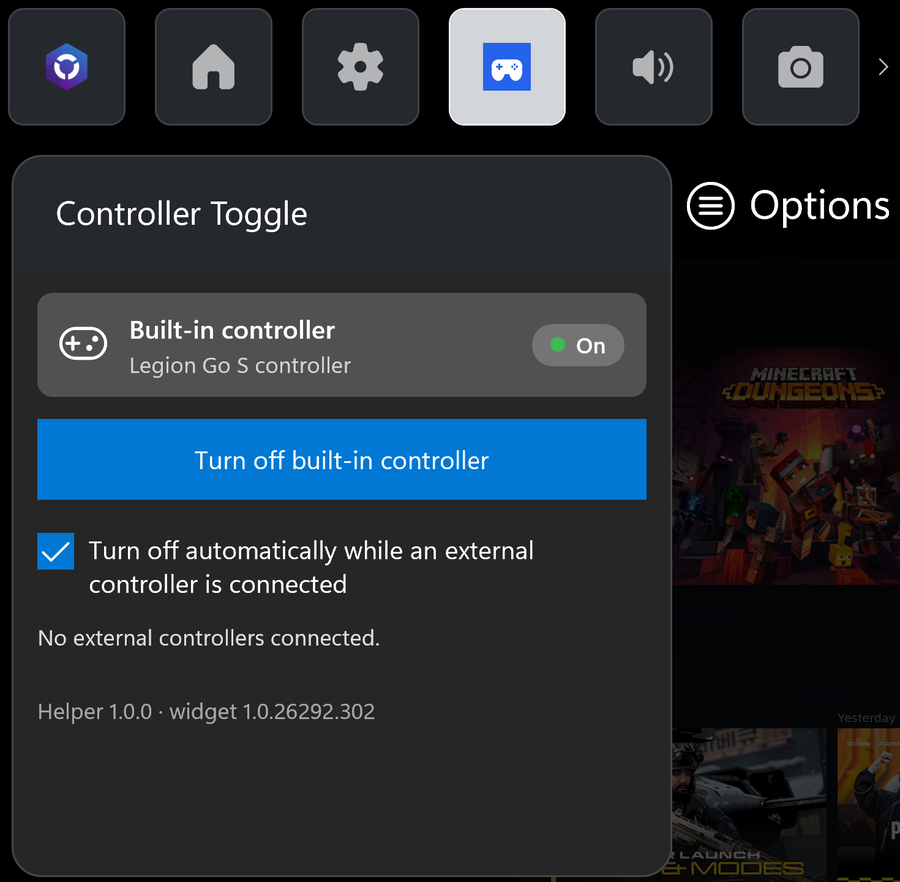
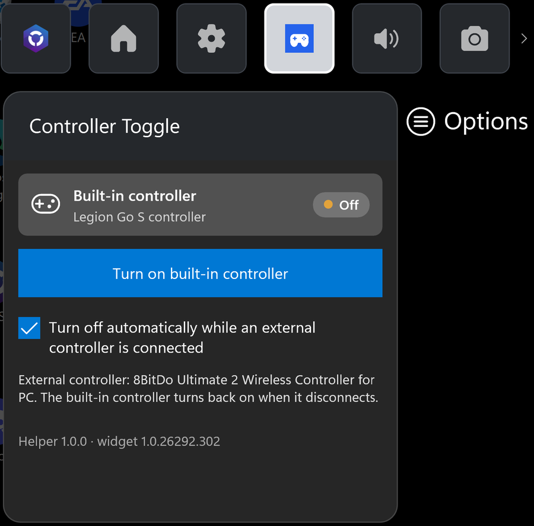

Free · open source · Windows 10 & 11
Controller Toggle is an Xbox Game Bar widget that disables the handheld's built-in gamepad with one tap, or automatically when you connect an Xbox, PlayStation or 8BitDo controller, so games treat your external controller as player 1.
Version 1.0.0 · Smart App Control must be off to install


Dock a Windows handheld and pick up another controller, and the built-in gamepad is still connected. Many games give it player 1, ignore your external pad, or react to a stray thumb on the handheld. Lenovo's Legion Space has no switch for it, and people have been asking for one on every handheld forum since 2022.
Press the Game Bar button and switch the built-in controller off or on, even in the middle of a game, with touch, mouse or your external pad.
Connect a controller over USB, Xbox Wireless or Bluetooth and the built-in one turns off. Disconnect it and it comes back by itself.
Disabled at the Windows level, like Device Manager, so Steam and every game stop seeing it. No HidHide, ViGEm or extra drivers.
Uninstalling always turns the controller back on, and the widget warns you before you switch off your only controller.
Why Smart App Control has to be off: it only runs apps that are signed with a paid commercial certificate or already known to Microsoft. Controller Toggle is a free hobby project with its own certificate. Microsoft Defender and SmartScreen keep protecting you. If you turn Smart App Control back on later, turn the built-in controller on (or uninstall) first.
| Device | Status |
|---|---|
| Lenovo Legion Go S | Tested |
| Legion Go, Legion Go 2, ROG Ally / Ally X, MSI Claw, Zotac Zone | Recognized, not tested yet |
Tried it on another handheld? Let me know how it went.